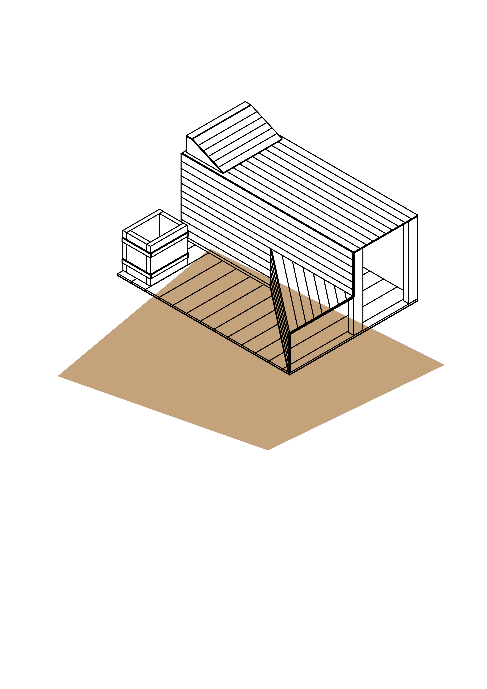
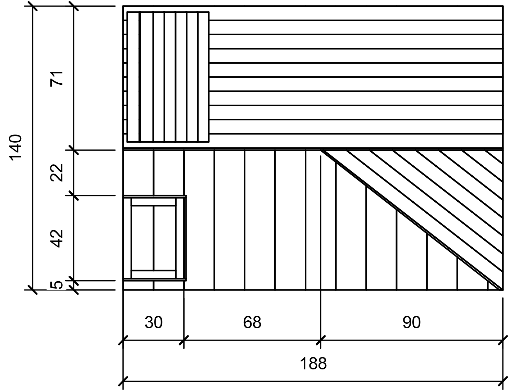

SOMETHING GOOD

La zona living, di accesso alla suite, è dedicata ai momenti di condivisione degli ospiti. Questa zona ospita un angolo con cucinotto e frigorifero e un ampio spazio per tavolo e sedie.
La zona free- time è quella in cui ogni ospite può passare il proprio tempo libero nel modo che più gli piace. Questa zona può fungere da studiolo: è presente una scrivania con colonna operativa che permette di indirizzare la luce e di ricaricare eventuali smartphone o PC. Nel sottoscala è presente un’area con divanetti e sul muro si trova una cassa per la musica.
L’area wellness comprende il bagno, dotato del necessario, e la sauna. Si accede alla sauna dalla camera da letto tramite una porta scorrevole vetrata a due ante.
La camera da letto offre un comodo letto matrimoniale molto basso e ricoperto di cuscini, in stile orientale. A completare l’arredo contribuisce un ampio armadio e due comodini.
SAUNA
La sauna finlandese, elemento principale della suite, è racchiusa in una piccola stanzetta che si affaccia sulla camera da letto, ed è circondata da mura per tre lati; l’ultimo lato è quella della porta vetrata scorrevole d’accesso realizzata in cristallo temperato per mantenere il calore. La posizione della sauna nella suite è studiata e ben calcolata, infatti questa è visibile solo dalla camera da letto e inoltre è molto vicina alla doccia del bagno, utile appena finito il trattamento nella sauna. Chi utilizza la sauna può scegliere di sdraiarsi sul lettino o sedersi anche sul gradino ad altezza intermedia. Ai piedi della sauna si trova un forno che contiene pietre laviche per generare calore. La sauna è costruita interamente in legno di frassino, così come ne sono rivestite le pareti. L’ambiente è dotato di adeguate ventole per il cambiamento dell’aria.
 